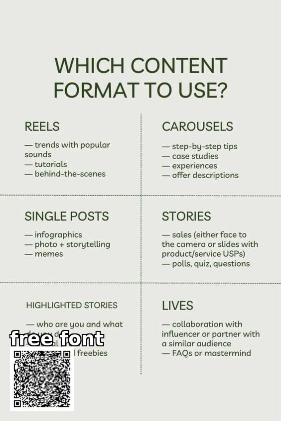

VISION
1. Mentor entrepreneurs and creators
2. Build strong personal brands
3. Connects individuals with business opportunities
4. Provide exposure to underrepresented communities
5. Create a network of successful entrepreneur who support the next generation



OUR STORY/HISTORY
The website “Entrepreneur Mentor site” was founded and created in 2020 during Covid 19 where there was a rapid growth of Influencers and small businesses online via TikTok and Instagram. However, where some individuals with the same goal could not succeed in their careers hence the creation of the site to help young black people who wants to brow their businesses while networking and exposing themselves to different opportunities and collaborations. In addition to the website providing an analysis of the user’s social page to see how they could improve their businesses and their media platforms, the website will also be a fun experience for user as the website will post/host social events where all young, small businesses, Entrepreneurs can connect with establish businesses that were also small too, meet mentors and people interested in collaboration The aim is to create an ecosystem where established businesses support emerging entrepreneurs


INSPIRATON
In addition to the website providing an analysis of the user’s social page to see how they could improve their businesses and their media platforms, the website will also be a fun experience for user as the website will post/host social events where all young, small businesses, Entrepreneurs can connect with establish businesses that were also small too, meet mentors and people interested in collaboration The aim is to create an ecosystem where established businesses support emerging entrepreneurs.